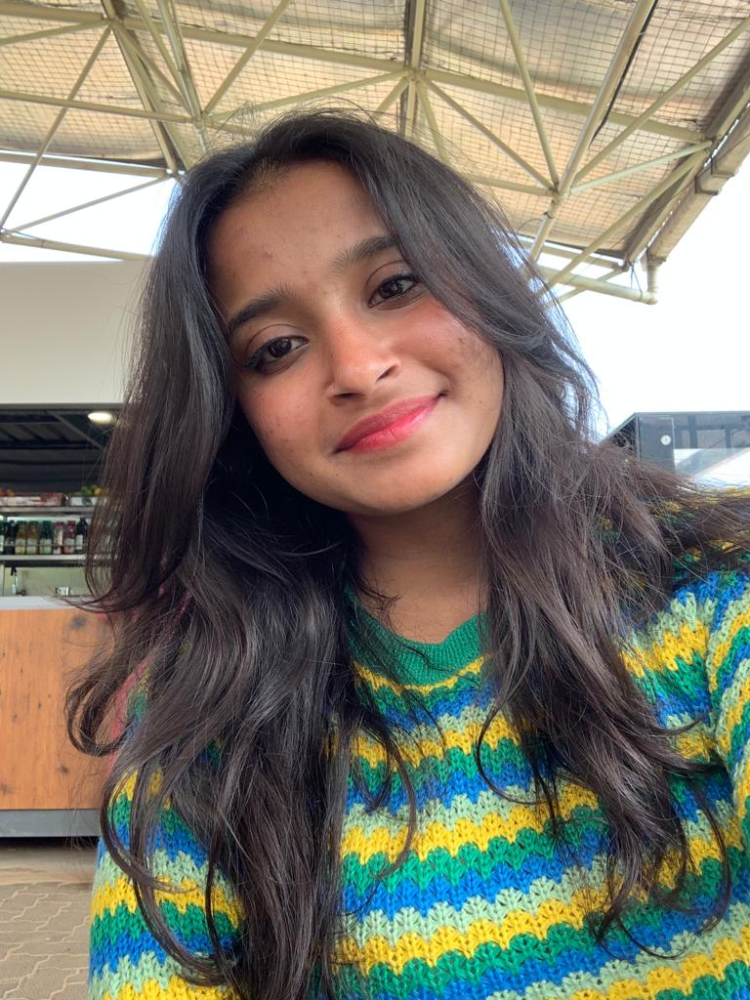

Ghanashree B N

Summary
i am a student pursuing my Bachelors of Engineering degree in the field of Artificial Intelligence.
I am a very dedicated and hard working student.My qualifications are as follows.
Education
- Bachelor of Engineering (B.E), CSE(AI)
Sri Venkateshwara College Of Engineering
2020 -2024
- Senior Secondary (XII), Science
Narayana (PUC board)
Year of completion: 2020
Percentage: 80.00%
-
Secondary (X)
Sri Vidya Mandir High School(STATE board)
Year of completion: 2018
Percentage: 82.00%
Skills
- C Programming ⭐️⭐️⭐️
- C++ Programming ⭐️⭐️⭐️
- Python Intermediate ⭐️⭐️⭐️
- VS Code Beginner ⭐️⭐️
- Java Beginner⭐️⭐️
- English Proficiency (Spoken) ⭐️⭐️⭐️⭐️⭐️
- Hindi Proficiency (Spoken) ⭐️⭐️⭐️⭐️⭐️
- Kannada Proficiency (Spoken) ⭐️⭐️⭐️⭐️⭐️
Internships
- Pursued my 1 month internship program in RAIL WHEEL FACTORY.
Improved my skills and build a Data based management system based project under their guidance.
- Pursued my 1 month internship program in VARCONS TECHNOLOGIES.
I was trained very well under them and have developed a machine learning project under their guidance.
Positions of Responsibility
I successfully managed to lead a team project and developed
a website . I used my leadership skills to successfully understand the abilities of my team mate.
I have done my internships and have successfully created projects for them as mentioned above.
Others
My Hobbies
Contact me